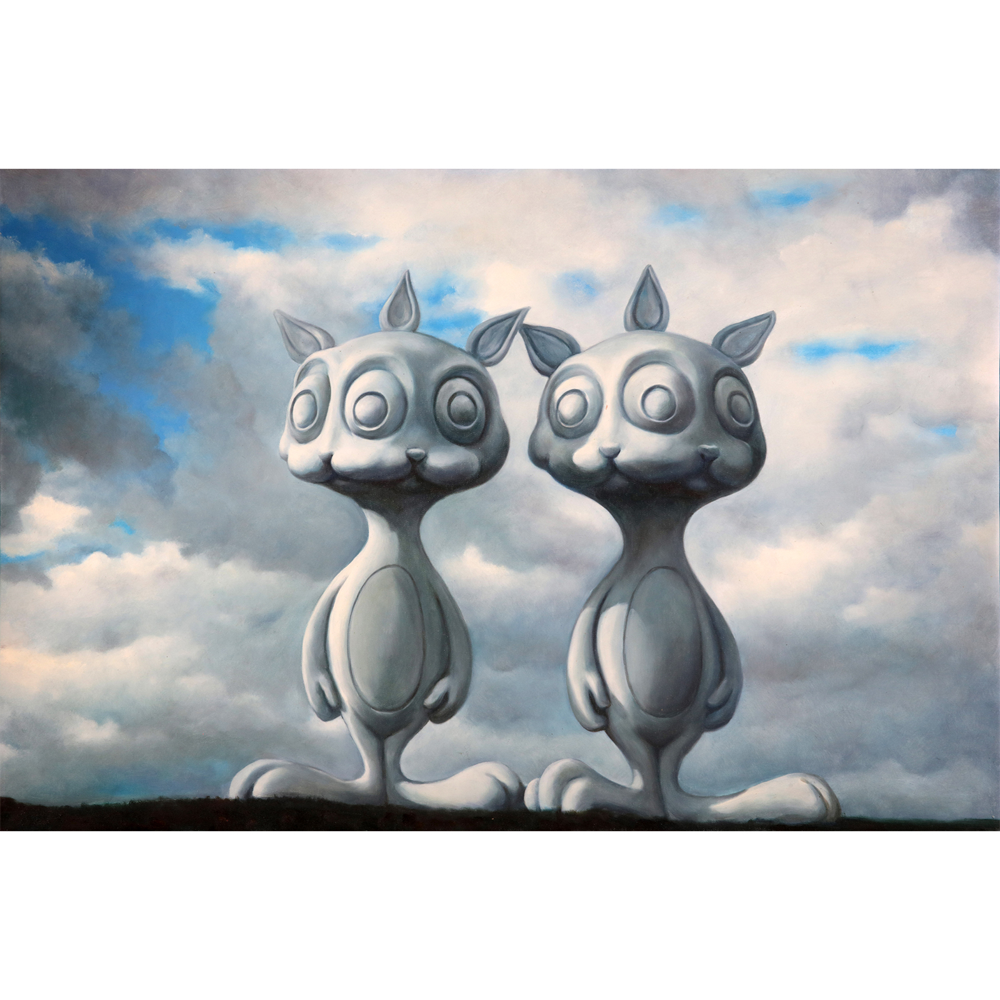
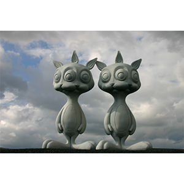

Double Cloud Rabbbits (2006)
Home
2000s
2006

Title:
Double Cloud Rabbbits
Date:
2006
Medium:
Oil on canvas
Dimensions:
36 × 24 inches
Work ID:
RE-000662
Signature / marks:
None observed.

Reference sculpture created by Ron English and photographed as a model for this work.